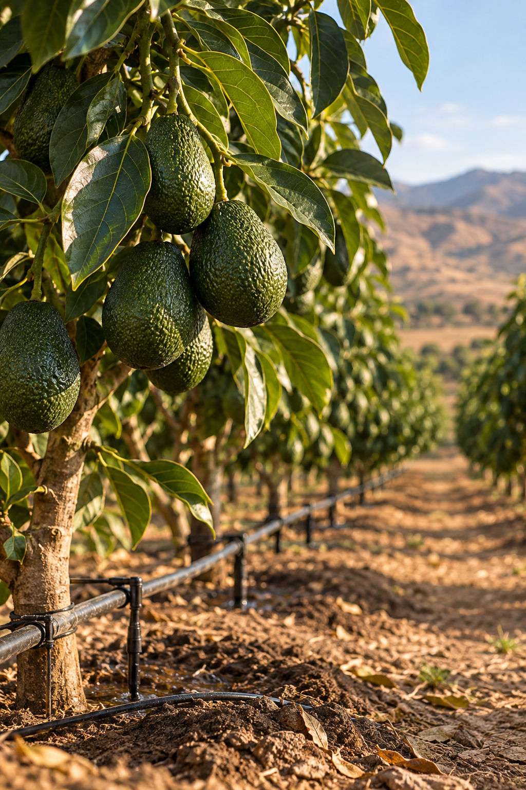

Palta Hass de Exportación
Huaral, Región Lima • Cosecha 2026
La Palta Hass cultivada en la costa central peruana es reconocida mundialmente por su textura cremosa, óptimo porcentaje de materia seca (≥ 21.5%) y resistencia para transporte marítimo en contenedores refrigerados.
Esta campaña financia a una asociación de 12 productores tecnificados en el valle de Huaral para optimizar fertirriego por goteo automatizado y certificar su cosecha bajo el estándar GlobalGAP.

Ficha Técnica y Condiciones de Inversión
Detalle agronómico y financiero estructurado para inversionistas y empacadoras comerciales.
| Parámetros del Cultivo | Términos Económicos | ||
|---|---|---|---|
| Variedad Botánica: | Persea americana (Variedad Hass) | Meta de Financiamiento: | S/. 32,000.00 |
| Zona Agroecológica: | Valle Costero Bajo Riego Tecnificado | Retorno Estimado: | 16.0% anual proyectado |
| Materia Seca Mínima: | 21.5% al momento del corte | Precio Acordado Futuro: | S/. 6.20 por kg en chacra |
| Calibres Principales: | 14 a 22 (Categoría Extra Exportable) | Volumen Comprometido: | 18 Toneladas métricas |
| Periodo de Cosecha: | a | Garantía: | Póliza Agrícola + Almacén Frigorífico |
| Lote validado con trazabilidad digital y auditoría hídrica de pozo subterráneo certificado. | |||
🚜 Plan Operativo y Cosecha Selectiva
- Monitoreo de Humedad de Suelo: Medición con tensiómetros para aplicación milimétrica de agua.
- Manejo Integrado de Plagas (MIP): Control biológico con crisopas e insectos benéficos.
- Pruebas de Materia Seca: Muestreo semanal de frutos en laboratorio para validar madurez.
- Corte con Tijera Curva: Cosecha manual cuidando el pedúnculo sin desgarros en la cáscara.
- Cadena de Frío Inmediata: Transporte a packing climatizado en menos de 4 horas postcosecha.
🥑 Ventajas y Glosario de Exportación
- Demanda firme y creciente en mercados de ultramar (Europa y Asia).
- Contrato de compra futura que amortigua la volatilidad de precios en el mercado mayorista.
- Certificación de predio libre de residuos químicos no autorizados.
Términos Clave:
¿Deseas participar en la próxima ventana de palta?
Contáctanos para sumarte a la lista de espera de la siguiente campaña tecnificada.